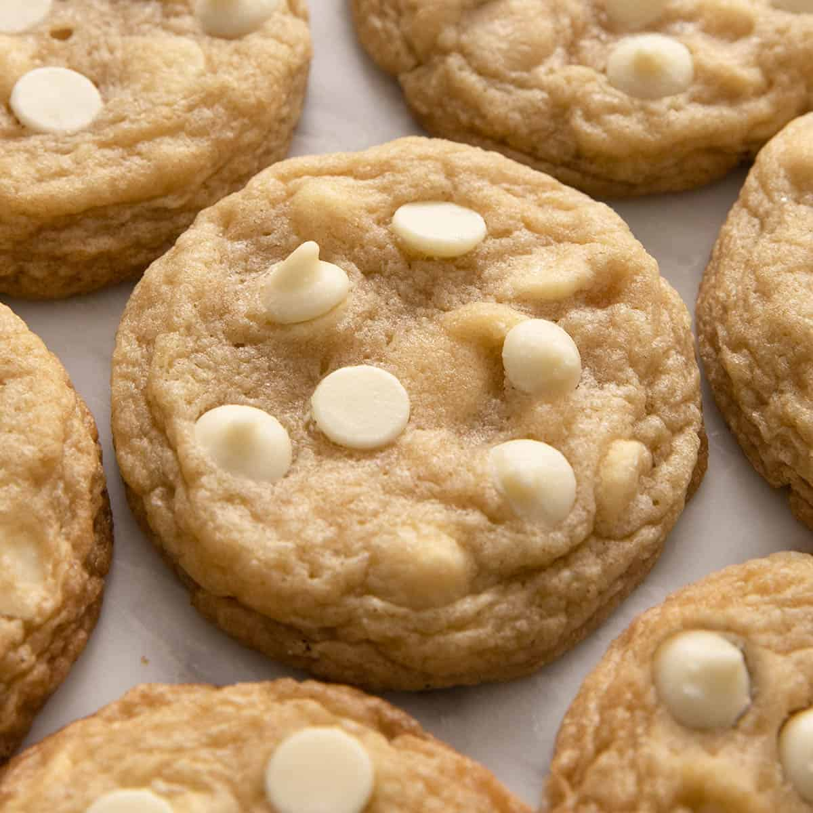

Angie’s White Chocolate Chip Cookies.
Start your baking journey by learning how to make SkyRoad Angie’s recipe for her delicious white chocolate chip cookies. These cookies will bring a smile on your friends faces with its sweet, white chocolatey chewiness with a brown butter twist to its flavor.
Ingredients
- 2 (4-ounce) sticks of salted butter
- ¾ Cup granulated Sugar
- ¾ Cup brown sugar
- 1 Egg
- ½ Teaspoon vanilla extract
- 2 cups all purpose flour
- ¼ teaspoon of baking soda
- 1 cup white chocolate chips
Instructions
- Melt the two sticks of salted butter in a saucepan over medium heat. Continue cooking until the butter is fully browned and has a nutty aroma. Transfer the browned butter to a heat-safe bowl. Because some of the butter’s water evaporates during the browning process, add 2–5 tablespoons of water back into the butter and mix well. Allow the butter to cool and solidify. Tip: To speed up the process, place the bowl of butter inside a larger bowl filled with ice. As the butter cools, scrape and stir the sides occasionally until the butter becomes solid but remains soft enough to mix.
- Once the butter has solidified, preheat your oven to 375°F (190°C). Place the softened browned butter, brown sugar, and granulated sugar into a medium-sized bowl. Mix until the ingredients are creamy and well combined. Add the egg and vanilla extract. Mix again until the mixture is smooth, creamy, and fully combined.
- In a separate small bowl, combine the flour and baking soda. Whisk them together until evenly distributed. Gradually add the dry ingredients to the butter and sugar mixture. Using a rubber spatula, gently fold everything together until a soft cookie dough forms. Add the white chocolate chips and continue folding until they are evenly distributed throughout the dough.
- Once the dough is ready and the oven has finished preheating, scoop out approximately 1-inch balls of dough. Place the dough balls onto a lightly greased or ungreased baking sheet, leaving enough space between each cookie for them to spread. Bake for 8–10 minutes, depending on your oven, or until the edges and tops are lightly golden brown. Remove the baking sheet from the oven and allow the cookies to cool on the sheet for a few minutes before carefully transferring them to a cooling rack or plate. Repeat the process with the remaining dough.